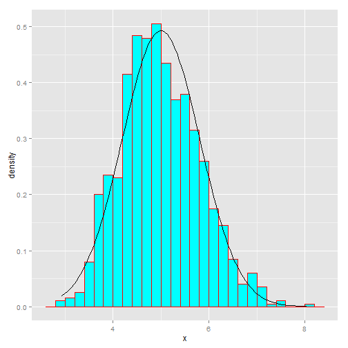

#-------------------------------------------------------------------------------
#-------------------------------------------------------------------------------
In this project you will investigate the exponential distribution in R and compare it with the Central Limit Theorem. The exponential distribution can be simulated in R with rexp(n, lambda) where lambda is the rate parameter. The mean of exponential distribution is 1/lambda and the standard deviation is also 1/lambda. Set lambda = 0.2 for all of the simulations. You will investigate the distribution of averages of 40 exponentials. Note that you will need to do a thousand simulations. Illustrate via simulation and associated explanatory text the properties of the distribution of the mean of 40 exponentials.
lambda<-0.2
x <- NULL
num_exponentials <- 40
set.seed(1000)
for(i in 1:1000) {
x <- c(x, mean(rexp(num_exponentials, lambda)))
}
Mean (Thoertrical)
1/lambda
## [1] 5
#5
Calculate the mean of distribution of averages of 40 exponentials (sample)
mean(x)
## [1] 4.986963
Calculate the Standard Deviation of distribution of averages of 40 exponentials (Sample)
sd(x)
## [1] 0.8089147
Expected standard deviation (Theoretrical)
(1/lambda)/(sqrt(num_exponentials))
## [1] 0.7905694
Variance of distribution of averages of 40 exponentials (Sample)
var(x)
## [1] 0.654343
Expected variance (Theoretrical)
((1/lambda)/(sqrt(num_exponentials)))^2
## [1] 0.625
library(ggplot2)
xdata <- as.data.frame(x)
ggplot(data = xdata, aes(x = x)) + geom_histogram(aes(y = ..density..), fill = I("cyan"),
binwidth = 0.2, color = I("red")) + stat_function(fun = dnorm, arg = list(mean = 5,
sd = sd(x)))

Lets look at the 95% confidence interval for 1/lambda:
mean(x) + c(-1, 1) * 1.96 * sd(x)/sqrt(nrow(xdata))
## [1] 4.936826 5.037100